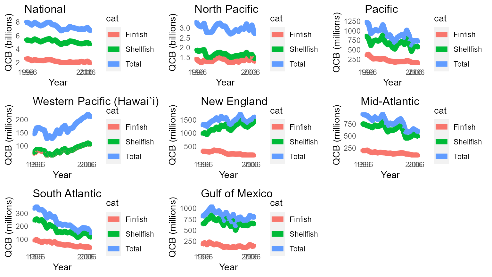
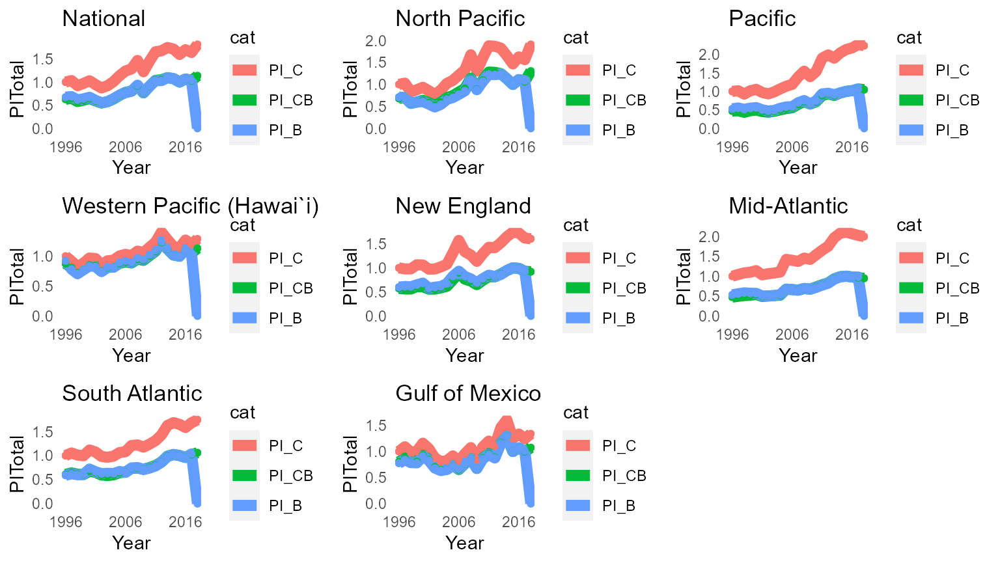
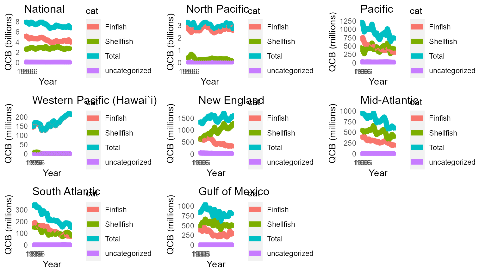

vignettes/FEUS-tables.Rmd
FEUS-tables.RmdPurpose: Construct the FEUS Commerical Fisheries state and national tables and output them to csv files
PKG <- c(# devtools::install_github("emilymarkowitz-NOAA/FishEconProdOutput", force = TRUE)
"FishEconProdOutput",
#Seperating species by taxonomic group
"taxize", # install.packages("remotes"); remotes::install_github("ropensci/taxize")
# Data Managment
"tidyverse",
"filesstrings",
"data.table",
"plyr",
"dplyr",
"rlist",
# #RMarkdown
"rmarkdown",
"ggpubr",
"kableExtra",
#Excel File Management
"xlsx",
"readxl"
)
for (p in PKG) {
if(!require(p,character.only = TRUE)) {
install.packages(p, repos = "http://cran.us.r-project.org")
require(p,character.only = TRUE)}
}
# Define what regions we are interested in
reg_order = c("National", "North Pacific", "Pacific", "Western Pacific (Hawai`i)",
"New England",
"Mid-Atlantic", "South Atlantic", "Gulf of Mexico")
reg_order_abbrv = c("US", "NP", "Pac", "WP", "NE", "MA", "SA", "GOM")
# Define Category
category0 = "category"
# Define Years
maxyr<-2018
yr <- minyr <- minyr.data<-as.numeric(paste0(floor((maxyr-24)/10),
ifelse(substr(maxyr, start = nchar((maxyr-24)),
stop = nchar((maxyr-24)))>=5, 6, 1))) #of data going into the analysis
minyr.ProdOut<-maxyr-19 # That will be shown in the analysis
baseyr<-as.numeric(paste0(floor(maxyr/10),
ifelse(substr(maxyr, start = nchar(maxyr),
stop = nchar(maxyr))>=5, 5, 0))) #Will change every 5 years, e.g., maxyr 2019 = byr 2015; maxyr 2020 = byr 2020; maxyr 2021 = byr 2020
# Folder name for output
folder<-"T567_ProdOutput"
titleadd = paste0(minyr.ProdOut, "To", maxyr, "_FSFEUS")
counter<-0
dir_in<-getwd()
if (TF) {
#Local Directories
dir_outputtables<-paste0(dir_in, "/output/")
dir.create(dir_outputtables)
# Define Directories
dir_analyses = paste0(dir_outputtables, folder)
dir.create(dir_analyses)
} else {
dir_analyses<-dir_outputtables<-dir_in
}
counter<-0
landings_data<-FishEconProdOutput::land
knitr::kable(head(landings_data), booktabs = T) %>%
kable_styling(latex_options = "striped")| Year | Pounds | Dollars | category | Tsn | State | Region | abbvreg | |
|---|---|---|---|---|---|---|---|---|
| 5 | 2001 | 613 | 750 | Shellfish | 83677 | Oregon | Pacific | Pac |
| 6 | 2003 | 172 | 119 | Shellfish | 83677 | Oregon | Pacific | Pac |
| 7 | 2006 | 131 | 131 | Shellfish | 83677 | North Carolina | South Atlantic | SA |
| 14 | 2005 | 15 | 30 | Shellfish | 83677 | Maryland | Mid-Atlantic | MA |
| 15 | 2004 | 3 | 2 | Shellfish | 83677 | New Jersey | Mid-Atlantic | MA |
| 16 | 2006 | 37 | 28 | Shellfish | 83677 | New Jersey | Mid-Atlantic | MA |
out <- OutputAnalysis(landings_data = landings_data,
category0 = category0, # the name of the column you are categorizing by
baseyr = baseyr,
titleadd = titleadd,
dir_analyses = dir_analyses,
skipplots = TRUE,
reg_order = reg_order, # The region(s) you want to assess
reg_order_abbrv = reg_order_abbrv, # The region(s) you want to assess
save_outputs_to_file = TF) # Here I use the variable TF so I can change it once at the begining of my code, depending on my reporting purposes
#> [1] "National"
#> [1] "North Pacific"
#> [1] "Pacific"
#> [1] "Western Pacific (Hawai`i)"
#> [1] "New England"
#> [1] "Mid-Atlantic"
#> [1] "South Atlantic"
#> [1] "Gulf of Mexico"
#> [1] "Create spreadsheets"
#> [1] "Create plots"
names(out)
#> [1] "warnings_list" "editeddata_list" "index_list" "spp_list"
#> [5] "figures_list" "gridfigures_list"
for (jjj in 1:length(out)) {
assign(names(out)[jjj], out[[jjj]])
}
result <- lapply(index_list, "[", , c("Year", "cat", "PI_CB"))
a<-data.frame(result[1][[1]]$Year,
result[1][[1]]$cat)
for (i in 1:length(result)) {
a<-cbind.data.frame(a, result[i][[1]]$PI_CB)
}
names(a)<-c("Year", "cat", names(result))
a <- a[a$Year %in% minyr.ProdOut:maxyr &
a$cat %in% "Total", ]
a$cat<-NULL
a$Footnotes<-NA
temp_code<-a
a[,reg_order]<-round(x = a[,reg_order], digits = 2)
temp_print <- a
ProdOutputPI_Raw<-temp_code
if (TF) {
write_csv(x = ProdOutputPI_Raw, file = paste0(dir_analyses, "/ProdOutputPI_Raw.csv"))
}
ProdOutputPI_Print<-temp_print
if (TF) {
write_csv(x = ProdOutputPI_Print, file = paste0(dir_analyses, "/ProdOutputPI_Print.csv"))
}
ProdOutputPI_Print$Footnotes<-NULL
knitr::kable(ProdOutputPI_Print, booktabs = T) %>%
kable_styling(latex_options = "striped")| Year | National | North Pacific | Pacific | Western Pacific (Hawai`i) | New England | Mid-Atlantic | South Atlantic | Gulf of Mexico | |
|---|---|---|---|---|---|---|---|---|---|
| 50 | 1999 | 0.61 | 0.60 | 0.47 | 0.78 | 0.61 | 0.52 | 0.59 | 0.80 |
| 51 | 2000 | 0.64 | 0.64 | 0.49 | 0.85 | 0.61 | 0.54 | 0.66 | 0.93 |
| 52 | 2001 | 0.59 | 0.58 | 0.45 | 0.84 | 0.56 | 0.49 | 0.64 | 0.84 |
| 53 | 2002 | 0.55 | 0.53 | 0.43 | 0.75 | 0.56 | 0.50 | 0.58 | 0.70 |
| 54 | 2003 | 0.58 | 0.59 | 0.46 | 0.81 | 0.59 | 0.51 | 0.57 | 0.65 |
| 55 | 2004 | 0.63 | 0.70 | 0.50 | 0.82 | 0.62 | 0.52 | 0.59 | 0.66 |
| 56 | 2005 | 0.71 | 0.74 | 0.53 | 0.88 | 0.75 | 0.67 | 0.63 | 0.73 |
| 57 | 2006 | 0.78 | 0.83 | 0.56 | 0.90 | 0.92 | 0.66 | 0.64 | 0.65 |
| 58 | 2007 | 0.80 | 0.91 | 0.65 | 0.89 | 0.77 | 0.65 | 0.73 | 0.77 |
| 59 | 2008 | 0.92 | 1.14 | 0.72 | 0.95 | 0.73 | 0.69 | 0.73 | 0.86 |
| 60 | 2009 | 0.77 | 0.89 | 0.66 | 0.93 | 0.65 | 0.68 | 0.71 | 0.68 |
| 61 | 2010 | 0.91 | 1.10 | 0.72 | 1.01 | 0.74 | 0.73 | 0.74 | 0.87 |
| 62 | 2011 | 1.04 | 1.28 | 0.89 | 1.08 | 0.82 | 0.78 | 0.79 | 0.96 |
| 63 | 2012 | 1.05 | 1.27 | 0.93 | 1.23 | 0.82 | 0.83 | 0.86 | 0.89 |
| 64 | 2013 | 1.09 | 1.25 | 0.89 | 1.12 | 0.87 | 0.93 | 0.99 | 1.17 |
| 65 | 2014 | 1.07 | 1.13 | 0.96 | 1.02 | 0.95 | 0.99 | 1.02 | 1.29 |
| 66 | 2015 | 1.00 | 1.00 | 1.00 | 1.00 | 1.00 | 1.00 | 1.00 | 1.00 |
| 67 | 2016 | 1.06 | 1.11 | 1.02 | 1.11 | 0.99 | 0.98 | 0.96 | 1.07 |
| 68 | 2017 | 1.03 | 1.07 | 1.06 | 1.05 | 0.93 | 0.96 | 1.02 | 1.00 |
| 69 | 2018 | 1.14 | 1.30 | 1.05 | 1.13 | 0.92 | 0.95 | 1.06 | 1.07 |
result <- lapply(index_list, "[", , c("Year", "cat", "Q_CB"))
a<-data.frame(result[1][[1]]$Year,
result[1][[1]]$cat)
for (i in 1:length(result)) {
a<-cbind.data.frame(a, result[i][[1]]$Q_CB)
}
names(a)<-c("Year", "cat", names(result))
a <- a[a$Year %in% minyr.ProdOut:maxyr &
a$cat %in% "Total", ]
a$cat<-NULL
a$Footnotes<-NA
temp_code<-a
a[,reg_order]<-round(x = a[,reg_order]/1e6, digits = 2)
for (i in 2:length(reg_order)){
a[,i]<-prettyNum(x = a[,i], big.mark = ",")
}
temp_print <- a
ProdOutputQ_Raw<-temp_code
if (TF) {
write_csv(x = ProdOutputQ_Raw, file = paste0(dir_analyses, "/ProdOutputQ_Raw.csv"))
}
ProdOutputQ_Print<-temp_print
if (TF) {
write_csv(x = ProdOutputQ_Print, file = paste0(dir_analyses, "/ProdOutputQ_Print.csv"))
}
ProdOutputQ_Print$Footnotes<-NULL
knitr::kable(ProdOutputQ_Print, booktabs = T) %>%
kable_styling(latex_options = "striped")| Year | National | North Pacific | Pacific | Western Pacific (Hawai`i) | New England | Mid-Atlantic | South Atlantic | Gulf of Mexico | |
|---|---|---|---|---|---|---|---|---|---|
| 50 | 1999 | 7,925.9 | 3,237.45 | 994.97 | 163.73 | 1,372.7 | 874.31 | 330.25 | 975.53 |
| 51 | 2000 | 7,652.22 | 2,782.8 | 1,031.55 | 160.49 | 1,451.42 | 823.76 | 311.89 | 1042.56 |
| 52 | 2001 | 7,436.92 | 2,773.35 | 1,000.27 | 128.59 | 1,494.97 | 894.44 | 266.45 | 916.56 |
| 53 | 2002 | 7,582.89 | 2,803.48 | 1,022.18 | 138.47 | 1,576.58 | 846.17 | 296.7 | 900.79 |
| 54 | 2003 | 7,860.64 | 3,037.26 | 1,157.27 | 128.95 | 1,489.53 | 867.2 | 273.39 | 943.28 |
| 55 | 2004 | 8,008.5 | 3,211.12 | 963.48 | 140.02 | 1,631.46 | 952.34 | 275.55 | 851.74 |
| 56 | 2005 | 7,609.16 | 3,247.18 | 854.34 | 160.41 | 1,548.18 | 832.39 | 217.24 | 730.11 |
| 57 | 2006 | 7,539.67 | 3,098.07 | 888.87 | 147.48 | 1,581.67 | 722.96 | 221.57 | 907.76 |
| 58 | 2007 | 7,173.43 | 3,095.49 | 757.34 | 170.47 | 1,377.65 | 765.26 | 209.9 | 800.26 |
| 59 | 2008 | 6,712.99 | 2,849.74 | 698.05 | 177.98 | 1,334.42 | 741.04 | 215.43 | 700.56 |
| 60 | 2009 | 6,885.98 | 2,702.71 | 821.72 | 152.68 | 1,437.56 | 771.19 | 207.59 | 859.91 |
| 61 | 2010 | 6,879.35 | 2,771.42 | 863.92 | 166.43 | 1,515.16 | 825.17 | 209.8 | 616.16 |
| 62 | 2011 | 7,310.27 | 2,912.82 | 899.48 | 168.79 | 1,569.24 | 855.63 | 192.34 | 781.50 |
| 63 | 2012 | 7,153.22 | 2,831.29 | 829.95 | 182.03 | 1,718.81 | 765.23 | 178.49 | 801.28 |
| 64 | 2013 | 7,067.88 | 2,998.89 | 1,013.3 | 192.13 | 1,523.36 | 586.26 | 155.58 | 728.14 |
| 65 | 2014 | 6,930.34 | 2,944.72 | 872.83 | 198.09 | 1,446.35 | 583.51 | 175.17 | 737.21 |
| 66 | 2015 | 6,968.71 | 3,206.74 | 629.88 | 206.74 | 1,400.7 | 597.16 | 189.02 | 738.47 |
| 67 | 2016 | 6,935.66 | 2,898.55 | 741.13 | 211.8 | 1,483.34 | 646.39 | 187.4 | 837.22 |
| 68 | 2017 | 7,188.51 | 3,146.48 | 743.87 | 221.27 | 1,533.05 | 613.04 | 180.98 | 808.79 |
| 69 | 2018 | 6,667.61 | 2,686.15 | 722.23 | 210.33 | 1,631.74 | 588.02 | 146.43 | 805.92 |
result <- lapply(index_list, "[", , c("Year", "cat", "PI_CB", "Q_CB", "v"))
a<-result$National
a<-a[a$Year %in% minyr.ProdOut:maxyr, ]
a<-dplyr::rename(a,
PI = PI_CB,
Q = Q_CB,
V = v)
# temp_code
a.pi<-spread(a[!(names(a) %in% c("V", "Q"))], cat, PI)
names(a.pi)[-1]<-paste0(names(a.pi)[-1], "_PI")
a.q<-spread(a[!(names(a) %in% c("PI", "V"))], cat, Q)
names(a.q)[-1]<-paste0(names(a.q)[-1], "_Q")
a.v<-spread(a[!(names(a) %in% c("PI", "Q"))], cat, V)
names(a.v)[-1]<-paste0(names(a.v)[-1], "_V")
b<-left_join(a.pi, a.q, by = c("Year"))
b<-left_join(b, a.v, by = c("Year"))
b<-b[,match(x = c("Year",
names(b)[grep(pattern = "_V", x = names(b), ignore.case = T)],
names(b)[grep(pattern = "_PI", x = names(b), ignore.case = T)],
names(b)[grep(pattern = "_Q", x = names(b), ignore.case = T)]),
names(b))]
b<-b[,match(x = c("Year",
names(b)[grep(pattern = "fin", x = names(b), ignore.case = T)],
names(b)[grep(pattern = "Shell", x = names(b), ignore.case = T)],
names(b)[grep(pattern = "Total", x = names(b))]),
names(b))]
b<-b[b$Year %in% minyr:maxyr, ]
temp_code<-b
temp_code$Footnotes<-NA
# temp_print
b<-a
b$PI<-round(x = b$PI, digits = 2)
b$Q<-prettyNum(x = round(x = b$Q/1e6), digits = 2, big.mark = ",")
b$V<-prettyNum(x = round(x = b$V/1e6), digits = 2, big.mark = ",")
b.pi<-spread(b[!(names(b) %in% c("V", "Q"))], cat, PI)
names(b.pi)[-1]<-paste0(names(b.pi)[-1], "_PI")
b.q<-spread(b[!(names(b) %in% c("PI", "V"))], cat, Q)
names(b.q)[-1]<-paste0(names(b.q)[-1], "_Q")
b.v<-spread(b[!(names(b) %in% c("PI", "Q"))], cat, V)
names(b.v)[-1]<-paste0(names(b.v)[-1], "_V")
b<-left_join(b.pi, b.q, by = c("Year"))
b<-left_join(b, b.v, by = c("Year"))
b<-b[,match(x = c("Year",
names(b)[grep(pattern = "_V", x = names(b), ignore.case = T)],
names(b)[grep(pattern = "_PI", x = names(b), ignore.case = T)],
names(b)[grep(pattern = "_Q", x = names(b), ignore.case = T)]),
names(b))]
b<-b[,match(x = c("Year",
names(b)[grep(pattern = "fin", x = names(b), ignore.case = T)],
names(b)[grep(pattern = "Shell", x = names(b), ignore.case = T)],
names(b)[grep(pattern = "Total", x = names(b))]),
names(b))]
b<-b[b$Year %in% minyr:maxyr, ]
temp_print<-b
temp_print$Footnotes<-NA
ProdOutputUS_Raw<-temp_code
if (TF) {
write_csv(x = ProdOutputUS_Raw, file = paste0(dir_analyses, "/ProdOutputUS_Raw.csv"))
}
ProdOutputUS_Print<-temp_print
if (TF) {
write_csv(x = ProdOutputUS_Print, file = paste0(dir_analyses, "/ProdOutputUS_Print.csv"))
}
ProdOutputUS_Print$Footnotes<-NULL
knitr::kable(ProdOutputUS_Print, booktabs = T) %>%
kable_styling(latex_options = "striped")| Year | Finfish_V | Finfish_PI | Finfish_Q | Shellfish_V | Shellfish_PI | Shellfish_Q | Total_V | Total_PI | Total_Q |
|---|---|---|---|---|---|---|---|---|---|
| 1999 | 1,478 | 0.61 | 2,429 | 3,334 | 0.61 | 5,486 | 4,812 | 0.61 | 7,926 |
| 2000 | 1,502 | 0.64 | 2,349 | 3,420 | 0.65 | 5,293 | 4,922 | 0.64 | 7,652 |
| 2001 | 1,378 | 0.59 | 2,346 | 3,020 | 0.59 | 5,081 | 4,398 | 0.59 | 7,437 |
| 2002 | 1,247 | 0.54 | 2,324 | 2,894 | 0.55 | 5,247 | 4,141 | 0.55 | 7,583 |
| 2003 | 1,399 | 0.58 | 2,421 | 3,128 | 0.58 | 5,428 | 4,527 | 0.58 | 7,861 |
| 2004 | 1,631 | 0.66 | 2,466 | 3,436 | 0.62 | 5,531 | 5,067 | 0.63 | 8,009 |
| 2005 | 1,739 | 0.73 | 2,381 | 3,675 | 0.70 | 5,215 | 5,414 | 0.71 | 7,609 |
| 2006 | 1,958 | 0.89 | 2,209 | 3,898 | 0.73 | 5,336 | 5,855 | 0.78 | 7,540 |
| 2007 | 1,917 | 0.87 | 2,194 | 3,854 | 0.78 | 4,969 | 5,771 | 0.80 | 7,173 |
| 2008 | 2,109 | 1.05 | 2,014 | 4,063 | 0.87 | 4,696 | 6,172 | 0.92 | 6,713 |
| 2009 | 1,699 | 0.86 | 1,982 | 3,574 | 0.73 | 4,917 | 5,273 | 0.77 | 6,886 |
| 2010 | 2,058 | 1.03 | 2,007 | 4,199 | 0.86 | 4,880 | 6,257 | 0.91 | 6,879 |
| 2011 | 2,497 | 1.17 | 2,135 | 5,079 | 0.98 | 5,183 | 7,576 | 1.04 | 7,310 |
| 2012 | 2,456 | 1.20 | 2,040 | 5,052 | 0.98 | 5,131 | 7,508 | 1.05 | 7,153 |
| 2013 | 2,524 | 1.21 | 2,078 | 5,212 | 1.04 | 4,995 | 7,735 | 1.09 | 7,068 |
| 2014 | 2,283 | 1.10 | 2,080 | 5,153 | 1.06 | 4,852 | 7,436 | 1.07 | 6,930 |
| 2015 | 2,177 | 1.00 | 2,177 | 4,792 | 1.00 | 4,792 | 6,969 | 1.00 | 6,969 |
| 2016 | 2,262 | 1.10 | 2,062 | 5,119 | 1.05 | 4,876 | 7,382 | 1.06 | 6,936 |
| 2017 | 2,334 | 1.05 | 2,220 | 5,047 | 1.02 | 4,968 | 7,381 | 1.03 | 7,189 |
| 2018 | 2,390 | 1.23 | 1,944 | 5,181 | 1.09 | 4,732 | 7,570 | 1.14 | 6,668 |
Here are a few figures that come out of this analysis!
Some come already in convient grids…
gridfigures_list$`000_All_byr2015_categoryPI_Total`
gridfigures_list$`000_All_byr2015_categoryQ_CB_Q`
And in single plots!
figures_list$National__PI_Finfish
figures_list$National__Q_CB_CatTot_QCatTot